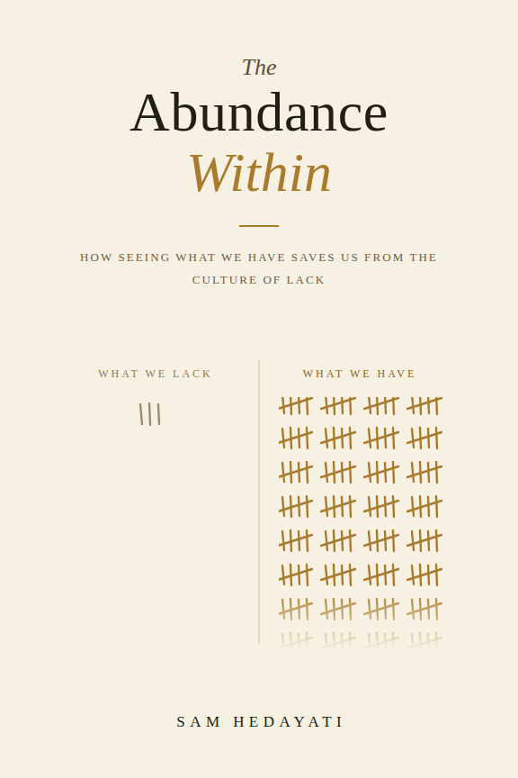

95%
fewer scenarios
Compressed 1,000 scenarios to 50. A certified variant reduced training time from 88.77 s to 5.27 s while retaining the full-SAA holdout cost in the tested setting.
Certified stochastic inspection studyOperations research · Ghent, Belgium
I design optimization and simulation tools that turn operational uncertainty into measurable improvements in cost, speed and service.
I work from mathematical formulation to an implementable decision — algorithm, simulation, validation and usable output.
The common thread is measurable decision support: reduce the problem without losing the decision, expose the trade-offs, and leave planners with a tool they can interrogate themselves.
↻ planners re-run the scenarios themselves — the loop closes without me
≈ 8 years professionally / 3 journal articles, 6 peer-reviewed conference contributions, 8 current manuscripts and research studies / reviewer for 3 international OR journals
A short numerical record of what changed in the computational studies — savings, reductions and solution-quality gains, with the scope kept explicit.
95%
Compressed 1,000 scenarios to 50. A certified variant reduced training time from 88.77 s to 5.27 s while retaining the full-SAA holdout cost in the tested setting.
Certified stochastic inspection study13.3–29.4%
Across 80 marketplace-routing instances: 13.3% below the best sequential policy and 29.4% below cheapest-source planning; better on 75 of 80 and never worse.
Integrated sourcing and routing study94.4%
Reduced 418.50 s to 23.31 s on the largest delayed-inspection benchmark while keeping the reported upper-bound gaps below 8%.
Published inspection-allocation study10,000
A tailored dynamic program matched the integer-program optimum on every tested instance and averaged an 8.6× speedup at 100 stages.
Exact dynamic-programming study40.0%
Against a strong workload-coverage roster in paired synthetic weeks; separately, condition information and skill-differentiated beliefs were worth 8.9% and 12.0%.
Integrated remanufacturing benchmark>80%
Fleet sizing cut waiting by more than 80% in both tested mobility regimes; multi-start search recovered all 12 of 12 exactly enumerable optima.
Stochastic mobile-depot studyScope note — these are published or fully scripted computational benchmark results under each study's stated assumptions. They are not presented as realized client savings.

First edition · 2026
How Seeing What We Have Saves Us from the Culture of Lack
A book about the personal and cultural habit of seeing only what is missing — and the disciplines of accurate seeing, gratitude, sufficiency, attention and generosity that can rebuild abundance without denying real need or injustice.
Depth is labelled, not implied.
Deep — published, benchmarked and defended. Working — used in delivery. Scoped — exactly the stated extent, no more.
Turning a messy operational question into something a solver can answer, then making it solvable at real instance sizes when the exact method stalls.
Mixed-integer & integer programming · Gurobi (gurobipy), AMPL, CPLEX · valid inequalities, lazy constraints, callbacks, warm starts · Lagrangian relaxation with dual-guided repair heuristics · Benders / L-shaped decomposition · exact dynamic programming · simulated annealing, genetic algorithms, differential evolution, large-neighbourhood and hill-climbing search
Plans that hold when demand, quality and failures misbehave — and a defensible figure for what the stochastic treatment is worth, rather than an assertion that it is.
Two-stage stochastic programming · sample average approximation with statistical optimality-gap bounds · scenario generation and reduction (moment matching, clustering, quasi-Monte-Carlo) · decision-dependent (endogenous) uncertainty · value of the stochastic solution
Discrete-event models of production and logistics systems, plus the interface that lets a planner run them without me in the room.
Discrete-event simulation (SimPy, R simmer) · simulation–optimization · design of experiments · stochastic failures, rework loops, WIP and spare-parts inventory, replenishment policies, queueing and utilisation, operator-skill effects · Python (NumPy, pandas, SciPy, Matplotlib, multiprocessing, Tkinter) · R · Git · GUI and dashboard delivery
Six years inside operations before the research programme: mapping how a process actually runs, getting the data out, and putting numbers in front of the people who decide.
BPMN and formal process modelling · as-is / to-be mapping and process reengineering · SQL extraction and merging against production databases · R analytics and reporting · dashboard design · production planning, timetabling and scheduling · bottleneck analysis · KPI definition and board-level reporting · statistical process control, process and measurement system capability, acceptance sampling
Real but narrow, and worth saying precisely: reinforcement learning applied to the control of an optimization algorithm, not general deep-learning practice.
PPO agents in custom Gym environments learning Lagrangian multiplier update policies · graph neural networks for combinatorial optimization (co-supervised, not sole author) · kernel-based contextual / prescriptive models · scikit-learn · supervised classification, k-means and k-medoids clustering
One SAP Materials Management implementation at a petrochemical facility, six months, on the process side: blueprinting and mapping how material flow, procurement and stock movements should run, settled with the business before it was built. Process design, not configuration.
For inspection-station allocation with delayed inspection, the scalable Lagrangian scheme reduced runtime by 94.4% on the largest IDI benchmark while keeping its reported gap below 8%; the genetic-algorithm baseline reached 20.52% in IDI and exceeded 52% in MDI on the largest hard cases. Computers & Operations Research 194, 107588 (2026)
Two MILP formulations for joint order batching and picker routing with alternative locations. A tailored valid inequality closed benchmark gaps from 15.2% and 17.0% to 0%; the stronger formulation reduced the clustered-case gap to 0.18% and solved instances up to 180 nodes. IMA Journal of Management Mathematics 35(2), 241–265 (2024)
Cluster-based simulated annealing for re-supplying autonomous mobile parcel lockers under multiple time windows and time-dependent parking costs. The method scaled to 1,200 potential meeting points and averaged a 4.54% gap on the small- and medium-size CPLEX validation set. Future Transportation 4(4), 1266–1296 (2024)
For integrated disassembly scheduling and workforce planning, the exact solver found no incumbent on the largest synthetic class within 600 s; the matheuristic returned feasible plans with 1.23%–3.06% gaps to the best available lower bounds under the same budget. Working paper (2026) · reproducible synthetic benchmarks
One tab per journal article. Each animation draws the problem the paper solves — the structure, never the results.
Inspection station allocation with delayed inspection
Computers & Operations Research 194, 107588 (2026) · with S. De Vuyst and B. Raa
A defect born at an early station need not be caught there: it may be caught at any station inside its window, at the price of capacity every other defect type competes for. One cycle follows one defect down the line to the station that catches it.
Joint order batching and picker routing with alternative locations
IMA Journal of Management Mathematics 35(2), 241–265 (2024) · with M. Setak, E. Demir and T. Van Woensel
When an item is held at several shelves, the route chooses the location. One cycle draws the tour; the ring marks the moment a pick commits to the alternative that suits the route.
Re-supplying autonomous mobile parcel lockers in last-mile distribution
Future Transportation 4(4), 1266–1296 (2024) · with M. Setak, T. Van Woensel and E. Demir
A replenishment vehicle tours autonomous lockers under multiple time windows and time-dependent parking costs. One cycle runs one resupply round; a bar fills as each locker is restocked.
Derived an exact dynamic-programming algorithm for the uncapacitated inspection-allocation problem: identical optima on 10,000 tested instances and an 8.6× average speedup at 100 stages.
On an independent holdout sample, the stochastic inspection plan cost 9.3% less than expected-value planning. Certified scenario reduction then removed 95% of the scenarios without giving back the tested out-of-sample result.
In paired synthetic remanufacturing experiments, integrated roster decisions reduced weekly cost by 40.0% against a workload-coverage rule; condition information contributed 8.9% and operator-skill information 12.0% against their respective ablations.
Stochastic and learning-augmented optimization for capacity allocation and scheduling in remanufacturing, delivered as decision tools the industrial partner uses directly on their own data. Teaching assistant since February 2022: runs the exercise sessions for the whole course and sometimes delivers the theory lectures — probability and R, exploratory data analysis, hypothesis testing, regression, one- and two-way ANOVA, design of experiments, acceptance sampling, statistical process control, process and measurement system capability. Co-supervised one M.Sc. thesis.
City logistics and warehousing: waste-collection routing, last-mile delivery with alternative locations, integrated order picking and batching, mobile parcel lockers. Coursework with BETA, the Dutch research school for Operations Management & Logistics.
Six positions, two of them concurrent, totalling three years and three months. Process modelling and reengineering in every role; SQL extraction against live databases; dashboards and board-level reporting; planning, timetabling and scheduling across competing teams at a startup; bottleneck analysis on a live garment production floor; process design on a SAP MM implementation at a petrochemical facility.